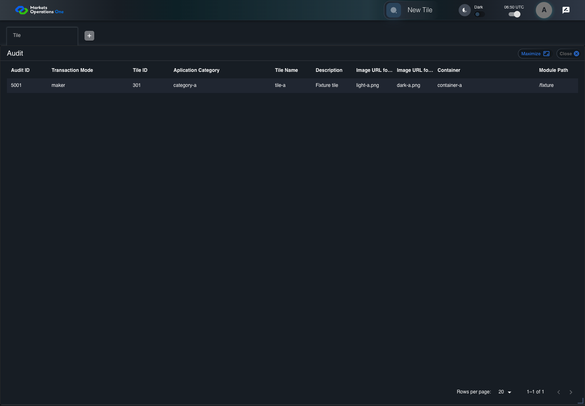
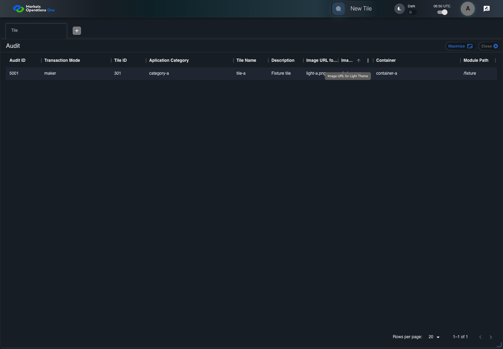

BFF-ADM-097 current BFF administration through actual UI
FAIL · application/run-072/bff-adm-097-current-bff-administration-through-actual-ui-cb8cda62b43a-attempt-1 · ACTUAL_APPLICATION_LOCAL_SERVICES
Actual current React and exact-current BFF admin controllers/services/JPA with actual migration DDL in disposable PostgreSQL. Controlled OUD/EMS2 identities and local Spring bootstrap. Fixture SQL seeds/mutates isolated records; service errors are actual database errors. Undefined agreed messages remain unresolved acceptance.
2026-10-22T06:50:50.303Z to 2026-10-22T06:51:00.960Z
Assertions and result · Artifact manifest · Exact run inputs and source hashes
Result SHA-256:f6f40120b43c9c110acadc5ddaf5d9987ca137cb9764a19237fdaf00fc927afcRetained failure details
[
{
"message": "Error: \u001b[2mexpect(\u001b[22m\u001b[31mlocator\u001b[39m\u001b[2m).\u001b[22mtoHaveText\u001b[2m(\u001b[22m\u001b[32mexpected\u001b[39m\u001b[2m)\u001b[22m failed\n\nLocator: locator('[role=\"tabpanel\"]:visible').locator('[role=\"dialog\"]').filter({ has: getByText('Audit', { exact: true }) }).getByRole('grid', { includeHidden: true }).locator('[data-id=\"5001\"] [data-field=\"imageLightTheme\"]')\nExpected: \u001b[32m\"\u001b[7mlight\u001b[27m-a.png\"\u001b[39m\nReceived: \u001b[31m\"\u001b[7mdark\u001b[27m-a.png\"\u001b[39m\nTimeout: 5000ms\n\nCall log:\n\u001b[2m - Expect \"toHaveText\" locator('[role=\"tabpanel\"]:visible').locator('[role=\"dialog\"]').filter({ has: getByText('Audit', { exact: true }) }).getByRole('grid', { includeHidden: true }).locator('[data-id=\"5001\"] [data-field=\"imageLightTheme\"]') with timeout 5000ms\u001b[22m\n\u001b[2m - waiting for locator('[role=\"tabpanel\"]:visible').locator('[role=\"dialog\"]').filter({ has: getByText('Audit', { exact: true }) }).getByRole('grid', { includeHidden: true }).locator('[data-id=\"5001\"] [data-field=\"imageLightTheme\"]')\u001b[22m\n\u001b[2m 14 \u00d7 locator resolved to <div role=\"cell\" tabindex=\"-1\" aria-colspan=\"1\" data-colindex=\"7\" aria-colindex=\"8\" data-field=\"imageLightTheme\" class=\"MuiDataGrid-cell MuiDataGrid-cell--textLeft MuiDataGrid-withBorderColor\">\u2026</div>\u001b[22m\n\u001b[2m - unexpected value \"dark-a.png\"\u001b[22m\n",
"stack": "Error: \u001b[2mexpect(\u001b[22m\u001b[31mlocator\u001b[39m\u001b[2m).\u001b[22mtoHaveText\u001b[2m(\u001b[22m\u001b[32mexpected\u001b[39m\u001b[2m)\u001b[22m failed\n\nLocator: locator('[role=\"tabpanel\"]:visible').locator('[role=\"dialog\"]').filter({ has: getByText('Audit', { exact: true }) }).getByRole('grid', { includeHidden: true }).locator('[data-id=\"5001\"] [data-field=\"imageLightTheme\"]')\nExpected: \u001b[32m\"\u001b[7mlight\u001b[27m-a.png\"\u001b[39m\nReceived: \u001b[31m\"\u001b[7mdark\u001b[27m-a.png\"\u001b[39m\nTimeout: 5000ms\n\nCall log:\n\u001b[2m - Expect \"toHaveText\" locator('[role=\"tabpanel\"]:visible').locator('[role=\"dialog\"]').filter({ has: getByText('Audit', { exact: true }) }).getByRole('grid', { includeHidden: true }).locator('[data-id=\"5001\"] [data-field=\"imageLightTheme\"]') with timeout 5000ms\u001b[22m\n\u001b[2m - waiting for locator('[role=\"tabpanel\"]:visible').locator('[role=\"dialog\"]').filter({ has: getByText('Audit', { exact: true }) }).getByRole('grid', { includeHidden: true }).locator('[data-id=\"5001\"] [data-field=\"imageLightTheme\"]')\u001b[22m\n\u001b[2m 14 \u00d7 locator resolved to <div role=\"cell\" tabindex=\"-1\" aria-colspan=\"1\" data-colindex=\"7\" aria-colindex=\"8\" data-field=\"imageLightTheme\" class=\"MuiDataGrid-cell MuiDataGrid-cell--textLeft MuiDataGrid-withBorderColor\">\u2026</div>\u001b[22m\n\u001b[2m - unexpected value \"dark-a.png\"\u001b[22m\n\n at /Users/lushevol/code/github/ratan-release-impact/workbench/e2e/audit-specs/bff-admin.spec.ts:106:26\n at AuditCapture.step (/Users/lushevol/code/github/ratan-release-impact/workbench/e2e/support/audit-fixture.ts:94:21)\n at /Users/lushevol/code/github/ratan-release-impact/workbench/e2e/audit-specs/bff-admin.spec.ts:18:27",
"location": {
"file": "/Users/lushevol/code/github/ratan-release-impact/workbench/e2e/audit-specs/bff-admin.spec.ts",
"column": 26,
"line": 106
},
"snippet": " 104 | await audit.capture('audit-theme-column-header',`Actual full header for ${property} in audit row ${match[3]}.`,text);\n 105 | await page.mouse.move(10,60);await expect(page.getByRole('tooltip',{includeHidden:true})).not.toBeVisible();\n> 106 | await expect(target).toHaveText(match[2]);return;\n | ^\n 107 | }\n 108 | throw new Error(`Missing exact BFF UI binding at ${id} step${step.number}: ${text}`);\n 109 | });"
}
]Machine observations
- actual-generated-tile-audit.json
4d6c02247a07dd5f2a8715d8871f9372765955961cfce5cd392351f6677b520e - actual-identity-projection.json
f991b570d46cc94c041088767c34590ecbe2c972dcf301a92a083fbdfcd288be - baseline-inputs.json
f1540f28ce1823869401a35da19cc70548f4cd1245ca55349656d5f5ac7b0e7d - bff-boundary.json
48a420bf775119595afd796e4d88c0123a595843a3fe9711931884a244597c7f - concurrent-admin-a-maker.json
af91e415fd87851638ea408c198392e7f37b6020a68c03fa025dfc8223f998d4 - initial-persisted-records.json
7e3622cc859c46d78fb35005d1b6cb3ed0766ff00f4cc6b0a637bf0c8bc3d871 - reference-snapshot-3.json
1cef20e5717cf3750df05fc3fcfa80ea3d0fa68e025b4106908bddfe96284077 - reference-snapshot-4.json
22e4126e0db46ce664eab66ce53e18984383ac2ea5de5794a8709f72fdbd3551
Screenshot capture: CAPTURED. Named frames: 11.
Step screenshot bindings: INCOMPLETE. 8/9 canonical steps have execution screenshots.
Bindings measure structural coverage only. They do not establish screenshot content quality or relevance.
Screenshot content review: NOT_REVIEWED. Recorded context: 0/11 frames. Identical image bytes: 1 repeated frames. Recorded context does not establish human visual review.
Step 9 has no screenshot from an executed step.
Canonical step timeline
Given Admin A uses subject "admin-a" with role "FMO_ADMIN" in an isolated authenticated browser
Execution: PASSED.1. step-01 Visible state after step 1: Given Admin A uses subject "admin-a" with role "FMO_ADMIN" in an isolated authenticated browser
2026-10-22T06:50:53.849Z · 1440×1000
Step: /Users/lushevol/code/github/ratan-release-impact/workbench/tasks/ui-test-coverage-20261022/test-cases.md:18805
SHA-256:21ff09f877db3abd6ad1fccec9725db00cf7be610a1c8f7969b16ee82a498271And the controlled Tile fixture records the initial grid rows and persisted values
Execution: PASSED.2. step-02 Visible state after step 2: And the controlled Tile fixture records the initial grid rows and persisted values
2026-10-22T06:50:53.981Z · 1440×1000
Step: /Users/lushevol/code/github/ratan-release-impact/workbench/tasks/ui-test-coverage-20261022/test-cases.md:18806
SHA-256:f7836715766c52ac95260ecfd596060fef2b8fa9b7cd01581eba9e244856ff8eAnd Category 101 has label "category-a" and Import Map 201 has Module Name "container-a"
Execution: PASSED.3. step-03 Visible state after step 3: And Category 101 has label "category-a" and Import Map 201 has Module Name "container-a"
2026-10-22T06:50:54.033Z · 1440×1000
Step: /Users/lushevol/code/github/ratan-release-impact/workbench/tasks/ui-test-coverage-20261022/test-cases.md:18807
SHA-256:f925a8ad8955f08615cb4ae5a74a80c2e3f4c0ed42d0413c54058482e37a58a3And both references belong to "FMO_ADMIN" and the Tile page category filter value is Category 101
Execution: PASSED.4. step-04 Visible state after step 4: And both references belong to "FMO_ADMIN" and the Tile page category filter value is Category 101
2026-10-22T06:50:54.097Z · 1440×1000
Step: /Users/lushevol/code/github/ratan-release-impact/workbench/tasks/ui-test-coverage-20261022/test-cases.md:18808
SHA-256:c005000327dd6b6789c293e2dc7ed478504dd4a69e578e955add8d9422c9e48bAnd Tile 301 has "imageLightTheme" equal to "light-a.png" and "imageDarkTheme" equal to "dark-a.png"
Execution: PASSED.5. step-05 Visible state after step 5: And Tile 301 has "imageLightTheme" equal to "light-a.png" and "imageDarkTheme" equal to "dark-a.png"
2026-10-22T06:50:54.148Z · 1440×1000
Step: /Users/lushevol/code/github/ratan-release-impact/workbench/tasks/ui-test-coverage-20261022/test-cases.md:18809
SHA-256:2b1e24fbe5fcebda84f3a5ce5b84aef00fcffcf20f4fdd51447d0dc96bc93ef2And its completed maker update creates audit row "5001" in the controlled fixture
Execution: PASSED.6. step-06 Visible state after step 6: And its completed maker update creates audit row "5001" in the controlled fixture
2026-10-22T06:50:54.248Z · 1440×1000
Step: /Users/lushevol/code/github/ratan-release-impact/workbench/tasks/ui-test-coverage-20261022/test-cases.md:18810
SHA-256:85bde2ebc43cb7276be070a14e42c2298cf10ce7ace4f94ddec79e83d7505ee0When Admin A clicks the button labeled "Audit" in the Tile grid row with "Record Id" "301"
Execution: PASSED.7. step-07 Visible state after step 7: When Admin A clicks the button labeled "Audit" in the Tile grid row with "Record Id" "301"
2026-10-22T06:50:54.561Z · 1440×1000
Step: /Users/lushevol/code/github/ratan-release-impact/workbench/tasks/ui-test-coverage-20261022/test-cases.md:18811
SHA-256:fe6a30ef9d78b9fee1dc3abac11a4fb731ed8be17ef2a9245af940a6e5926c58Then the cell under "Image URL for Light Theme" equals "light-a.png" in audit row "5001" of dialog "Audit"
Execution: FAILED.
8. audit-row-identity Actual audit row 5001 before scrolling to the theme column.
2026-10-22T06:50:54.767Z · 1440×1000
Step: the cell under "Image URL for Light Theme" equals "light-a.png" in audit row "5001" of dialog "Audit"
SHA-256:073c8bd1a04f81faad9b4cbdb8220a1379f9da2a31a464c37ebda68d082f7c52
9. audit-theme-column-header Actual full header for imageLightTheme in audit row 5001.
2026-10-22T06:50:55.167Z · 1440×1000
Step: the cell under "Image URL for Light Theme" equals "light-a.png" in audit row "5001" of dialog "Audit"
SHA-256:7273fee5e2ccdad24e04d2521a1fc56eaefc81e353459c1c8299592d8ac3b2b0
10. step-08-failure Visible state when step 8 failed. Later steps did not execute.
2026-10-22T06:51:00.550Z · 1440×1000
Step: /Users/lushevol/code/github/ratan-release-impact/workbench/tasks/ui-test-coverage-20261022/test-cases.md:18812
SHA-256:073c8bd1a04f81faad9b4cbdb8220a1379f9da2a31a464c37ebda68d082f7c52Image bytes match frame 8. An unchanged image can be valid for consecutive assertions. This match does not establish correct step content.
And the cell under "Image URL for Dark Theme" equals "dark-a.png" in audit row "5001" of dialog "Audit"
Execution: NOT_EXECUTED.No screenshot is recorded for this step. No executed state is claimed.
Additional named frames
Screenshots establish visible state only. Assertions and traces support functional claims.